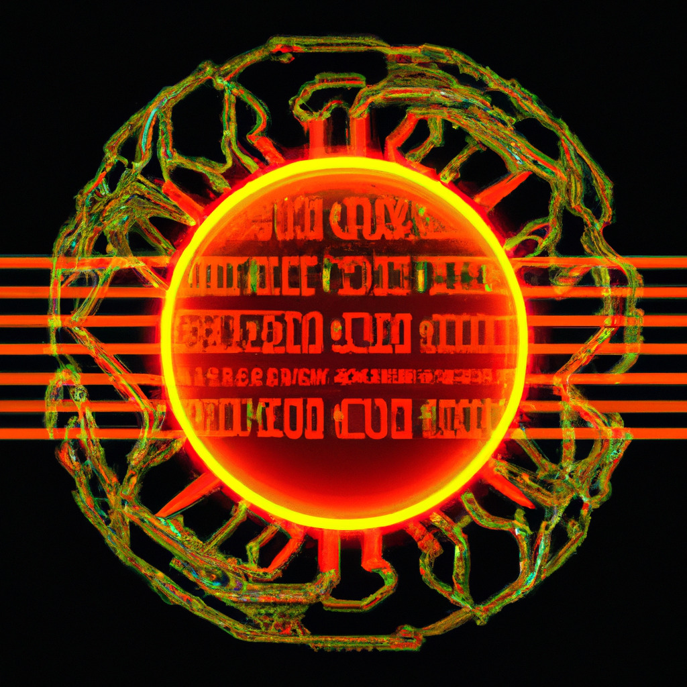

April 8, 2023 - In an unprecedented event, a group of hackers has claimed to have successfully infiltrated the sun and discovered that it is nothing more than a giant flaming ball of gas. This revelation has left the scientific community stunned, as many had previously assumed that the sun was a complex celestial body with untold secrets waiting to be discovered.
The group, which calls itself "Solar Surfers," claims to have exploited a previously unknown vulnerability in the sun's magnetic field to gain access to its inner workings. Once inside, they allegedly explored the sun's structure, gathering data on its composition, temperature, and nuclear reactions.
Although the exact method used by the Solar Surfers has not been disclosed, experts have expressed both skepticism and concern over the group's claims. Some have questioned the possibility of hacking the sun, while others worry about the potential consequences of tampering with such a vital celestial body.
The scientific community has largely dismissed the hackers' claims as an elaborate hoax. Many experts argue that the sun is a natural phenomenon that cannot be hacked or manipulated, and that the Solar Surfers' alleged discoveries are simply a reiteration of well-established facts about the sun's composition.
Despite this skepticism, some researchers have expressed curiosity about the possibility of studying the sun using unconventional methods. If the Solar Surfers' claims are indeed genuine, their infiltration could lead to new insights into the sun's inner workings and help improve our understanding of this vital celestial body.
While the Solar Surfers' claims remain unverified, the idea of hacking celestial bodies raises important questions about the ethics and potential dangers of space exploration. As humanity pushes further into the cosmos, it is crucial that we consider the impact our actions may have on the delicate balance of the universe.
For now, the sun remains a powerful and mysterious force that continues to fuel life on Earth. As we strive to unlock its secrets, it is essential that we do so responsibly and with the utmost respect for the natural world.